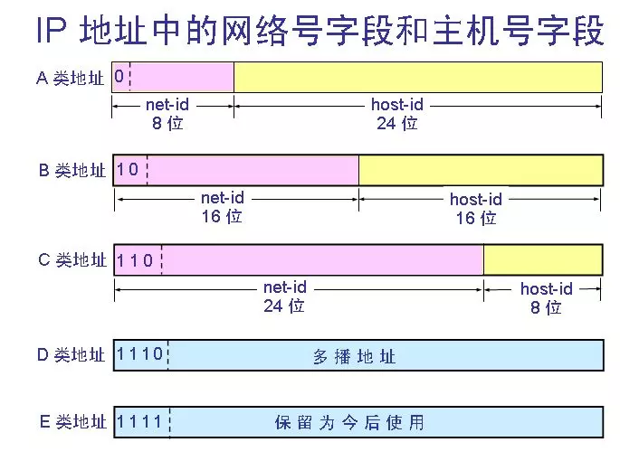
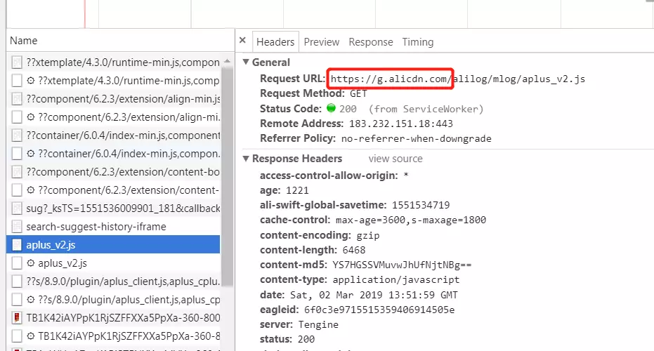
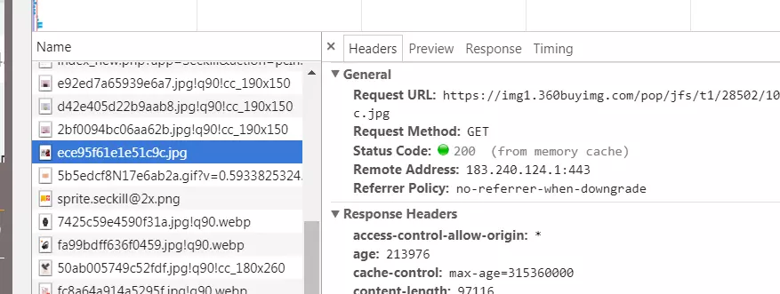
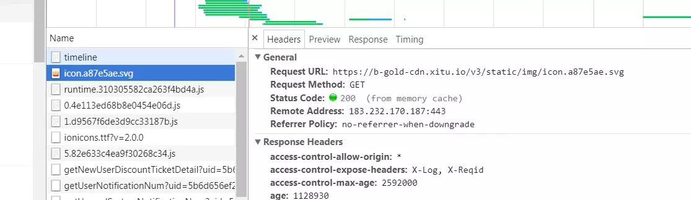

五类 IP 地址 TOP
网络地址：用于识别主机所在的网络；
主机地址：用于识别该网络中的主机。
IP地址分为五类：
各类可容纳的地址数目不同。其中A类、B类、和C类这三类地址用于 TCP/IP 节点，其它两类D类和E类被用于特殊用途。
首先用一张图给大家一个初步的概念：

第一个八位段为网络地址，其它为主机地址，第一个八位段首位一定为0；
范围：1.0.0.1—126.155.255.254；
私有地址和保留地址：
10.X.X.X是私有地址（所谓的私有地址就是在互联网上不使用，而被用在局域网络中的地址）。
127.X.X.X是保留地址，用做循环测试用的。
第一个八位段和第二个八位段为网络地址，其它为主机地址，第一个八位段首位一定为10；
范围：128.0.0.1—191.255.255.254。
私有地址和保留地址:
172.16.0.0—172.31.255.255是私有地址
169.254.X.X是保留地址。如果你的IP地址是自动获取IP地址，而你在网络上又没有找到可用的DHCP服务器。就会得到其中一个IP。
前三个八位段为网络地址，第4个个字节为主机地址，第一个八位段首位一定为110。
范围：192.0.0.1—223.255.255.254。
私有地址：
192.168.X.X是私有地址。
不分网络地址和主机地址，第一个八位段首位一定为1110。
范围：224.0.0.1—239.255.255.254
不分网络地址和主机地址，第一个八位段首位一定为11110。
范围：240.0.0.1—255.255.255.254
跨域的原因及处理方式 TOP
出现跨域的原因是由于 浏览器的同源策略 所决定的。
同源策略限制了从同一个源加载的文档或脚本如何与来自另一个源的资源进行交互。这是一个用于隔离潜在恶意文件的重要安全机制。
这个说法一如既往的很官方，犹如女神的一句 呵呵，让人不知所以然。接下来就从 Dom 查询和接口请求来说明同源策略的必要性。
我们来看场景：
1.你打开 www.taobao.com，准备购买你已经添加在购物车的《JavaScript 高级程序设计》。
2.当你刚想付款的时候，有一个人发给你一个链接 www.heiheihei.com，你的眼神突然变得正经了，而后毫不犹豫的点了进去。
3.你很正经的观看 www.heiheihei.com 中的内容，www.heiheihei.com 也没有闲着，由于没有同源策略的限制，它向 www.taobao.com 发起了请求！暗地里为所欲为的做一些为所欲为的事情。
1.星期一的早上，你像往常一样点开淘宝，在淘宝里逛起了街，不过今天你没有在意为什么今天需要登陆。
2. 为什么需要登录呢？我就假设这是有心之人恶意为之，这个登陆页面做了什么呢？我再假设页面有以下代码
// HTML
<iframe name="taobaoo" src="www.taobaoo.com"></iframe>
// JS
// 由于没有同源策略的限制， Dom 可以直接拿到。
const iframe = window.frames['taobaoo'];
const account = iframe.document.getElementById('***')
const pw = iframe.document.getElementById('***')
// 密码账号被偷走了
复制代码从上面两种情况，我们初步了解同源策略确实能规避一些危险，不是说有了同源策略就安全，只是说同源策略是一种浏览器最基本的安全机制，毕竟能提高一点攻击的成本。
以上的方法我会挑几个讲
JSONP 的原理很简单，就是利用 <script> 标签没有跨域限制的漏洞。通过 <script> 标签指向一个需要访问的地址并提供一个回调函数来接收数据当需要通讯时。 JSONP 使用简单且兼容性不错，但是只限于 get 请求。
function jsonp(url, jsonpCallback, success) {
let script = document.createElement('script')
script.src = url
script.async = true
script.type = 'text/javascript'
window[jsonpCallback] = function(data) {
success && success(data)
}
document.body.appendChild(script)
}
jsonp('http://xxx', 'callback', function(value) {
console.log(value)
})CORS 需要浏览器和后端同时支持。浏览器会自动进行 CORS 通信，实现 CORS 通信的关键是后端。只要后端实现了 CORS，就实现了跨域。 服务端设置 Access-Control-Allow-Origin 就可以开启 CORS。 该属性表示哪些域名可以访问资源，如果设置通配符则表示所有网站都可以访问资源。
利用 Nginx 反向代理实现跨域。
虚拟主机的配置
server {
listen 8080; # 监听的端口
server_name 192.168.1.1; # 配置访问域名
root /data/toor; # 站点根目录
error_page 502 404 /page/404.html; # 错误页面
location ^~ /api/ { # 使用 /api/ 代理 proxy_pass 的值
proxy_pass http://192.168.20.1:8080; # 被代理的应用服务器 HTTP 地址
}
}复制代码以上简单的配置就可以实现反向代理的功能，跨域的问题也就解决了。
在 Vue 中就可以使用 proxyTable 这个属性进行相关的配置来解决跨域问题带来的烦恼。配置如下：
proxyTable: {
'/weixin': {
target: 'http://192.168.48.11:8100/', // 接口的域名
secure: false, // 如果是 https 接口，需要配置这个参数
changeOrigin: true, // 如果接口跨域，需要进行这个参数配置
pathRewrite: {
'^/weixin': ''
}
},
},正向代理和反向代理 TOP
具体的应用可以看我写的这一篇文章 【前端词典】和媳妇讲代理后的意外收获
CDN 带来的性能优化 TOP
CDN的全称是 Content Delivery Network，即内容分发网络。CDN 是构建在网络之上的内容分发网络，依靠部署在各地的边缘服务器，通过中心平台的负载均衡、内容分发、调度等功能模块，使用户就近获取所需内容，降低网络拥塞，提高用户访问响应速度和命中率。CDN 的关键技术主要有内容存储和分发技术。
在淘宝购物
我们在淘宝购物，大部分个人卖家只是在一个地方发货，江浙沪以外的地方好像收货都比较慢。
在京东购物
而我们在京东上买自营产品的话，它会根据我们的收货地点，在全国范围内找离我们最近、送达最快的仓库，不管我们在江浙沪，还是新疆西藏内蒙古，我们的收货时间都会大大减少。京东建立的仓储系统，就类似于 CDN。
访问速度快是电商网站取胜的必要法宝之一。
比如我们 SHEIN 主站的根服务器中国深圳，CDN 服务器在美国加州，欧洲法国，印度等三个地方（真实的细致很多）。
那么全球 6000 万用户请求的资源都是从中国深圳的机房发出的，这样一位美国加州的用户在打开首页的延时可能足够她画一个精致的妆容了。（PS: 深圳前端团队在招前端开发，有需求的可以私信我）
此时还是这位加州的用户想打开 SHEIN 打算购买一件晚礼服参加晚会。这次她视线还没有移到梳妆台，首页就已经打开了，然后她就开心的购物了。
这就是因为 CDN 服务器。
美国加州的 CDN 服务器，已经将根节点的资源复制过来了。并且我们有个机制，CDN 节点的资源十分钟会回源更新一次。所以在用户请求资源的时候是不会回源到深圳的根服务器请求的。这样不会出现用户在请求资源的时候，因为回源而导致的网络延时。
CDN 的核心点有两个: 一个是缓存，一个是回源。
前端往往认为 CDN 是不需要了解的知识。可是我们前端工程首先是软件工程师。多了解一些东西肯定是有益的。
静态资源本身具有访问频率高、承接流量大的特点，因此静态资源加载速度始终是前端性能的一个非常关键的指标。CDN 是静态资源提速的重要手段。
淘宝

京东

掘金
 我们随手打开一个网站点开一个静态资源，可以看到它都是从 CDN 服务器上请求来的。可以看出 "静态资源走 CDN" 是最佳实践。
Cookie 是紧跟域名的。同一个域名下的所有请求，都会携带相同的 Cookie。
但是如果我们只是请求一张图片，我们在请求中还要携带一个笨重的 Cookie 来回的跑，Cookie 中的信息和图片又是没有关联的，这种情况就很让人头痛了。Cookie 虽然小，但是随着请求的越来越多，这种的不必要的 Cookie 带来的开销将是无法想象的……
静态资源往往并不需要 Cookie 携带什么认证信息。把静态资源和主页面置于不同的域名下，就可以完美地避免请求中携带不必要的 Cookie。
看起来是一个不起眼的小细节，但带来的效用却是惊人的。电商网站静态资源的流量之庞大，如果没把这个多余的 Cookie 拿下来，不仅用户体验会大打折扣，每年因性能浪费导致的开销也会非常之高。
HTTP 强缓存&协商缓存 TOP
缓存是一种保存资源副本并在下次请求时直接使用该副本的技术。 当 web 缓存发现请求的资源已经被存储，它会拦截请求，返回该资源的拷贝，而不会去源服务器重新下载。
这样带来的好处是缓解服务器端压力，提升性能(获取资源的耗时更短了)。对于网站来说，缓存是达到高性能的重要组成部分。
缓存大致可归为两类：私有缓存与共享缓存。
共享缓存能够被多个用户使用；
私有缓存只能用于单独用户；
HTTP协议主要是通过请求头当中的一些字段来和服务器进行通信，从而采用不同的缓存策略。
HTTP通过缓存将服务器资源的副本保留一段时间，这段时间称为新鲜度限值。这在一段时间内请求相同资源不会再通过服务器。
HTTP协议中Cache-Control和Expires可以用来设置新鲜度的限值。
强缓存主要是采用响应头中的 Cache-Control 和 Expires 两个字段进行控制的。
其中
Expires是HTTP 1.0中定义的，它指定了一个绝对的过期时期。而Cache-Control是HTTP 1.1时出现的缓存控制字段。
Cache-Control:max-age 定义了一个最大使用期。 就是从第一次生成文档到缓存不再生效的合法生存日期。由于Expires是HTTP1.0时代的产物，因此设计之初就存在着一些缺陷，如果本地时间和服务器时间相差太大，就会导致缓存错乱。
这两个字段同时使用的时候
Cache-Control的优先级会更高一点。
这两个字段的效果是类似的，客户端都会通过对比本地时间和服务器返回的生存时间来检测缓存是否可用。如果缓存没有超出它的生存时间，客户端就会直接采用本地的缓存。如果生存日期已经过了，这个缓存也就宣告失效。接着客户端将再次与服务器进行通信来验证这个缓存是否需要更新。
Cache-Control 通用消息头字段被用于在 http 请求和响应中通过指定指令来实现缓存机制。
public：响应可以被任何对象（客户端、代理服务器等）缓存private：只能被单个用户缓存，不能作为共享缓存no-cache：使用缓存副本之前，需要将请求提交给原始服务器进行验证，验证通过才可以使用only-if-cached：客户端只接受已缓存的响应，并且不向原始服务器检查是否有更新的拷贝max-age=<seconds>：缓存存储的最大周期，超过这个时间缓存被认为过期(单位秒)。与 Expires 相反，时间是相对于请求的时间s-maxage=<seconds>：覆盖 max-age 或者 Expires 头，但是仅适用于共享缓存(比如各个代理)，并且私有缓存中它被忽略max-stale[=<seconds>]：表明客户端愿意接收一个已经过期的资源。可选的设置一个时间(单位秒)，表示响应不能超过的过时时间min-fresh=<seconds>：表示客户端希望在指定的时间内获取最新的响应must-revalidate：缓存必须在使用之前验证旧资源的状态，并且不可使用过期资源。proxy-revalidate：与 must-revalidate 作用相同，但它仅适用于共享缓存（例如代理），并被私有缓存忽略no-store：彻底得禁用缓冲，本地和代理服务器都不缓冲，每次都从服务器获取no-transform：不得对资源进行转换或转变。Content-Encoding, Content-Range, Content-Type 等 HTTP 头不能由代理修改。协商缓存机制下，浏览器需要向服务器去询问缓存的相关信息，进而判断是重新发起请求、下载完整的响应，还是从本地获取缓存的资源。
如果服务端提示缓存资源未改动（Not Modified），资源会被重定向到浏览器缓存，这种情况下网络请求对应的状态码是304。
基于资源在服务器修改时间的验证缓存过期机制
当客户端再次请求该资源的时候，会在其请求头上附带上 If-Modified-Since 字段，值就是第一次获取请求资源时响应头中返回的 Last-Modified 值。如果资源未过期，命中缓存，服务器就直接返回 304 状态码，客户端直接使用本地的资源。否则，服务器重新发送响应资源。从而保证资源的有效性。
基于服务资源校验码的验证缓存过期机制
服务器返回的报文响应头的 Etag 字段标示服务器资源的校验码（例如文件的 hash 值），发送到客户端浏览器，浏览器收到后把资源文件缓存起来并且缓存 Etag 值，当浏览器再次请求此资源文件时，会在请求头 If-None-Match 字段带上缓存的 Etag 值。
服务器收到请求后，把请求头中 If-None-Match 字段值与服务器端资源文件的验证码进行对比，如果匹配成功直接返回 304 状态码，从浏览器本地缓存取资源文件。如果不匹配，服务器会把新的验证码放在请求头的 Etag 字段中，并且以 200 状态码返回资源。
需要注意的是当响应头中同时存在 Etag 和 Last-Modified 的时候，会先对 Etag 进行比对，随后才是 Last-Modified
Etag 的问题
相同的资源，在两台服务器产生的 Etag 是不是相同的，所以对于使用服务器集群来处理请求的网站来说，Etag 的匹配概率会大幅降低。所在在这种情况下，使用 Etag 来处理缓存，反而会有更大的开销。